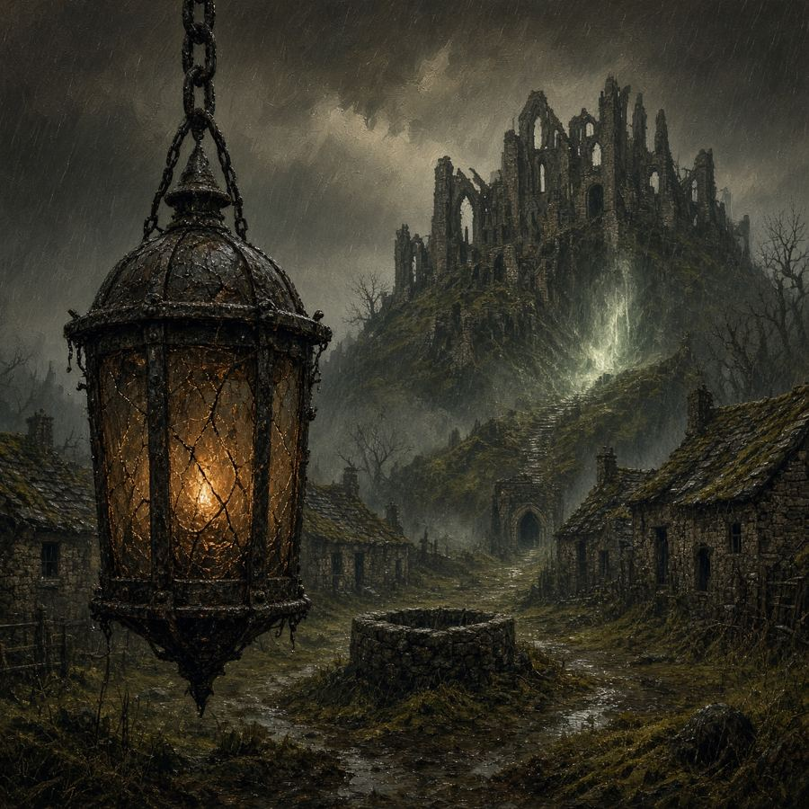
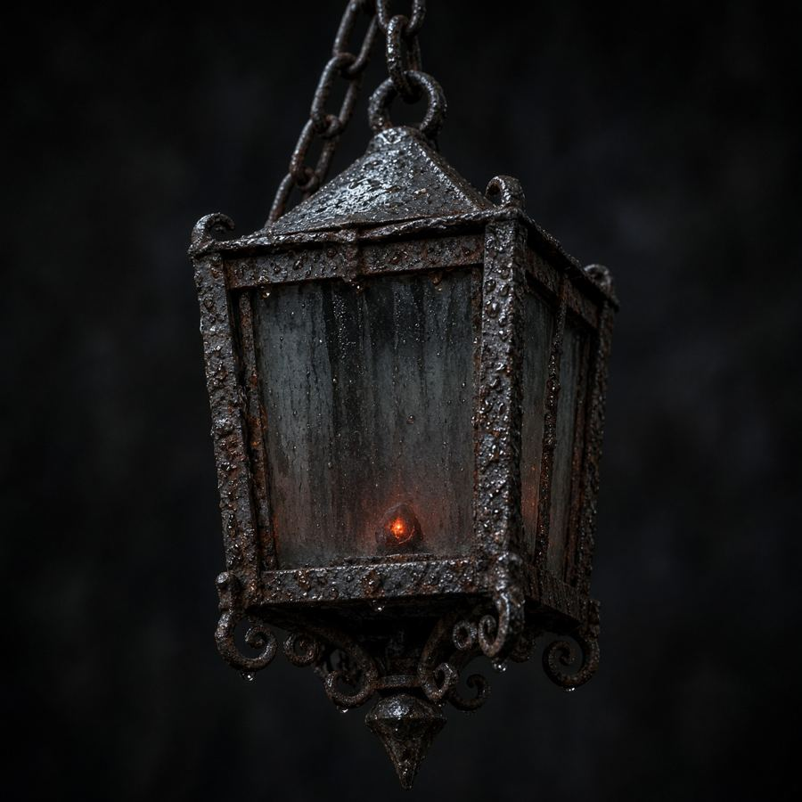
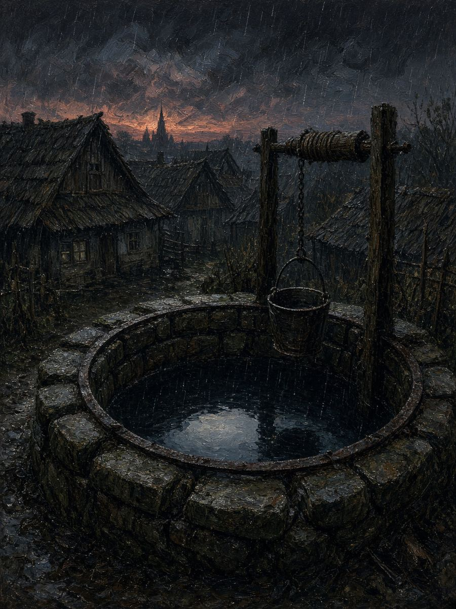
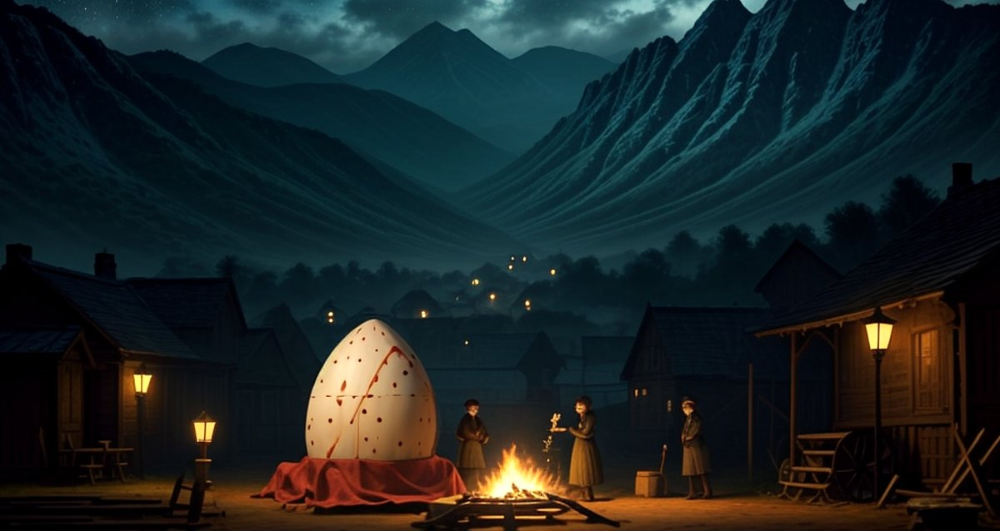
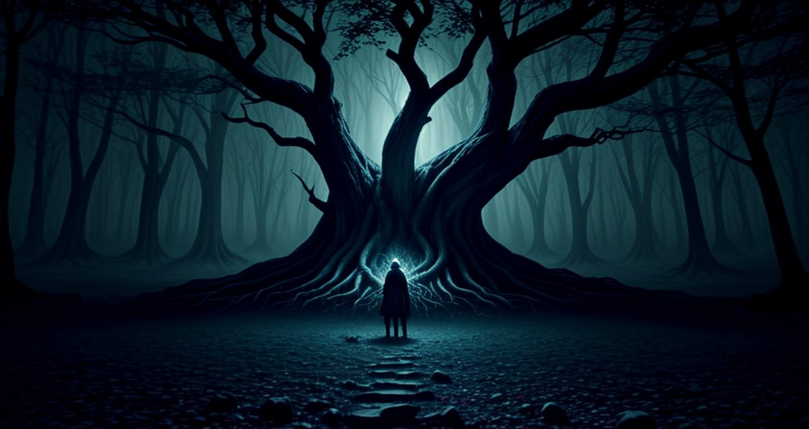
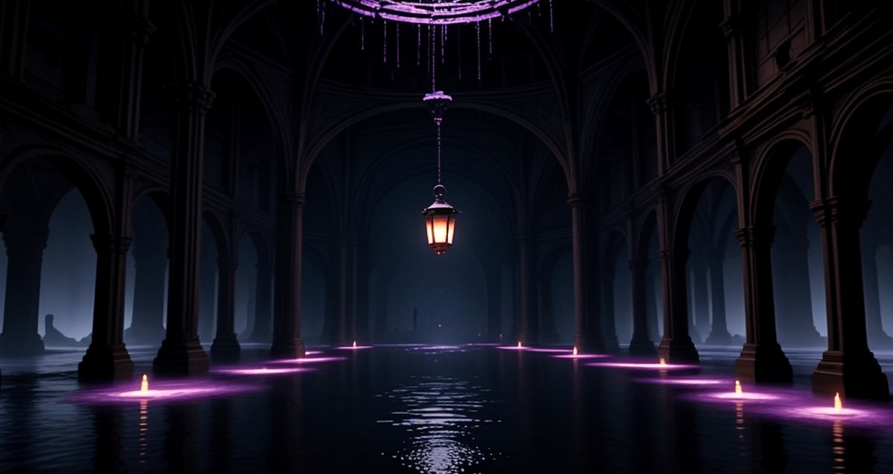
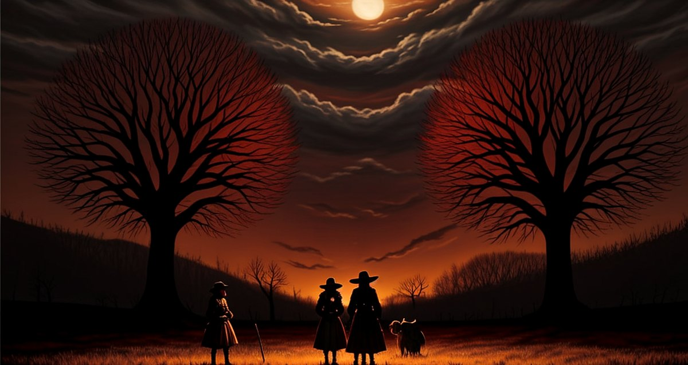
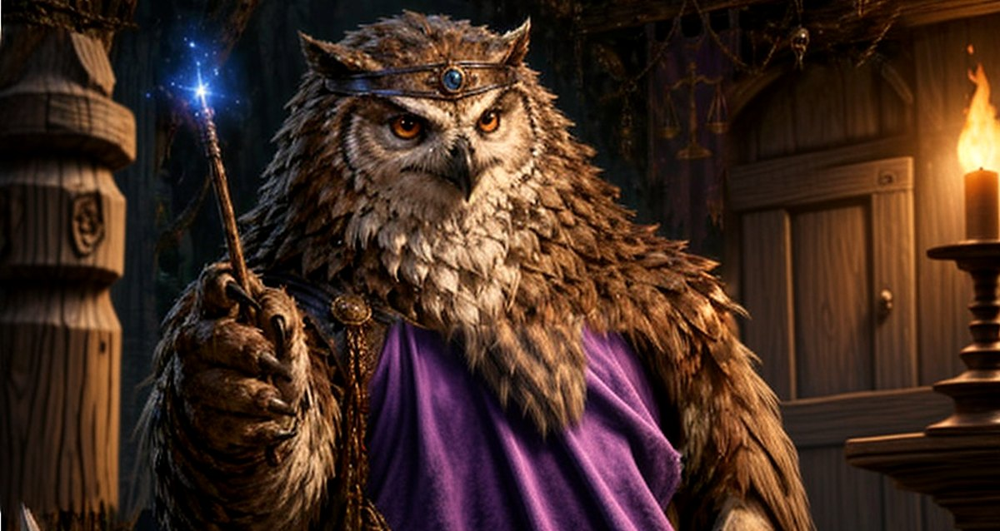
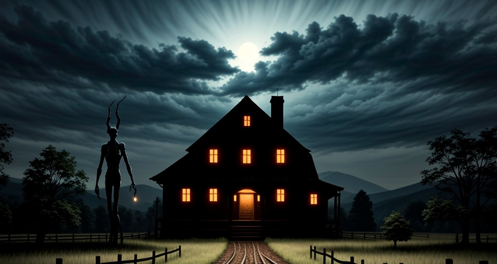
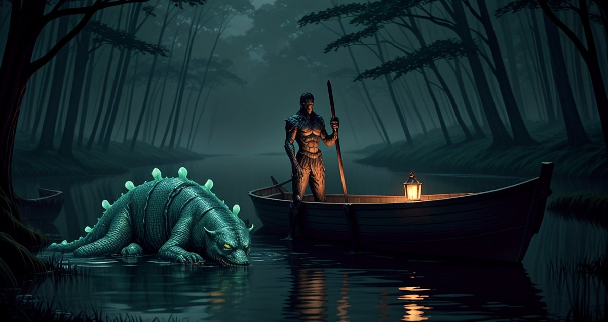

FREE STARTER · Complete adventure
The Lantern Below
The village lantern that never needed oil has gone dark. Recover the stolen Emberglass before moonrise—but the thief may have taken it because the lantern was never a blessing.

99¢ One-ShotsTonight’s table
Browser runner and printable kit. The Lantern Below is free. Proven nights are 99¢.
The catalog
Same region, different night. Hearthford, Hearthcross, and Oakhaven remember what the party did. Standalone nights say so on the card.

FREE STARTER · Complete adventure
The village lantern that never needed oil has gone dark. Recover the stolen Emberglass before moonrise—but the thief may have taken it because the lantern was never a blessing.

Live · Free preview
Saltmere’s well still gives water, but it has started taking names. Someone pried the old name-stone from the cistern wall; restore, trick, pay, or break the bargain before the dusk bucket is drawn.
Playtest preview · Not for sale
Make the birthday person the hero: their real name flows through the runner and print kit as the party chases a stolen birthday wish through forgotten celebration halls before midnight.

Live · Free preview
Briar Hollow is starving. The stolen egg is alive, its father is coming, and every solution creates a different consequence by dawn.

Live · Free preview
A corrupted grove, an endangered Heart Tree, and Malakor—a druid who tried to take the blight into himself and can still be reached, cleansed, or killed.

Live · Free preview
Oakhaven’s eastern ward is failing beneath its watchtower. Repair three live systems under pressure—or smash the core and knowingly sacrifice the tower to save the town.

Live · Free preview
Two communities need the same living wardstone. Return the shard and the Black Orchard survives while Oakhaven goes without; take it and Oakhaven gains protection at the orchard’s cost—unless the party finds a third way.
Live · Free preview
Six civilians are trapped on a failing bridge above rising black water. Save every person and the night still counts as a victory—even if Oakhaven loses the bridge.
Live · Free preview
A drowned bell is ringing a warning nobody answered. Rescue the missing apprentice, hear the dead bellkeeper out, and uncover what Oakhaven’s founders buried beneath the Mere.

Free preview · PDF bundle
A genius owlbear has a legal argument for keeping the village’s magic weapons. Raiders arrive at sundown. The law is unclear. The claws are not.
v1.2 corrected DM procedure and complete level-6 hero references are live; original v1.1 art/maps remain preserved while the final bundle is rebuilt.

Live · Free preview
Something tall is stealing iron from Bellmere's fences before a hard storm. The villagers think they have a monster problem. The creature may be the only thing trying to save the road.

Live · Free preview
Skiffs are overturning and livestock are disappearing near six blue-green lights in the marsh. The creature everyone blames may be the only thing pulling victims out of poisoned water.
Coming after review · $0.99 target
New releases enter the catalog only after their table-readiness, clue, presentation, readability, and site gates are green.
Hearthford notice board
What the town nailed up. The job, the reward, the deadline. The adventure is on the card above.
The village lantern is dark. The Emberglass is gone from beneath Hearthford. Bring it back before moonrise.
Reward: council seal and a night’s keep Posted by the Hearthford village council Before dusk The well is taking namesSaltmere still draws water. Someone pried the old name-stone off the cistern wall. The next bad bucket comes at dusk.
Reward: Reeve Flint’s writ Posted by Reeve Oda Flint · Saltmere Immediate A living egg, taken for the potBriar Hollow is starving. A hunter brought the egg in as food. Its father is already on the ridge.
Reward: the mill’s last sack Posted in Briar Hollow Missing The ferrymen’s apprenticeLast seen at the mere. A bell is ringing under still water. No ferry after dark until the apprentice is found.
Reward: a season’s ferry passage Posted by the Oakhaven ferrymen Overdue Surveyor, not returnedLast mark was the Black Orchard. Two towns claim the same living wardstone. The office still wants it logged.
Reward: the survey fee, paid either way Posted by the Oakhaven survey office Before the storm Fence iron, gone three nightsHesta Crowe’s rails are missing. No footprints in the mud. Something tall was seen on the road. The storm is already on the ridge.
Reward: Hesta’s smokehouse ham Posted by Hesta Crowe · Bellmere Road Before market Six lights in ReedwaterThree skiffs overturned. Two goats missing. A broad back with six blue-green lights is in the black water. Boats leave at dawn.
Reward: a skiff and a ferry cut Posted by Ferrymaster Jory Pell Now Six people on the Ashen BridgeWagons are stuck. The water is rising. Oakhaven can lose the bridge. It cannot lose the people.
Reward: the gate watch will pay in coin Posted by the Oakhaven gate watch Needed Four vials for Old Man KaelenThe Whispering Hollow is choking. Kaelen says Malakor went in to take the blight into himself. He has not come out.
Reward: Kaelen’s nectar price, paid up front Posted by Old Man Kaelen · Oakhaven Failing The eastern wardBlack splinters are coming up under the watchtower. The town’s roots are venting. The ward will not hold the night.
Reward: the tower watch’s pay chest Posted by the Oakhaven tower watch By sundown Magistrate GrubbleclawBrindlebarrow’s magic weapons are in his court. He says the law makes them his. Raiders are on the road.
Reward: the village arsenal, if you can get it Posted by the Brindlebarrow reeveNot a one-shot · Level 0 · 7 sessions
A boxed playtest for growing a character from age 12 to Level 1 in Hearthcross. Not for sale.
Characters
Level-4 SRD sheets for the level-4 nights. Oakhaven modules are level 3 and say so on the card.
The stage card is the prep.
12 pregens, 6 for a full party.
Hearthford remembers last Saturday.
Numbers, DCs, and talk-outs are on the card.